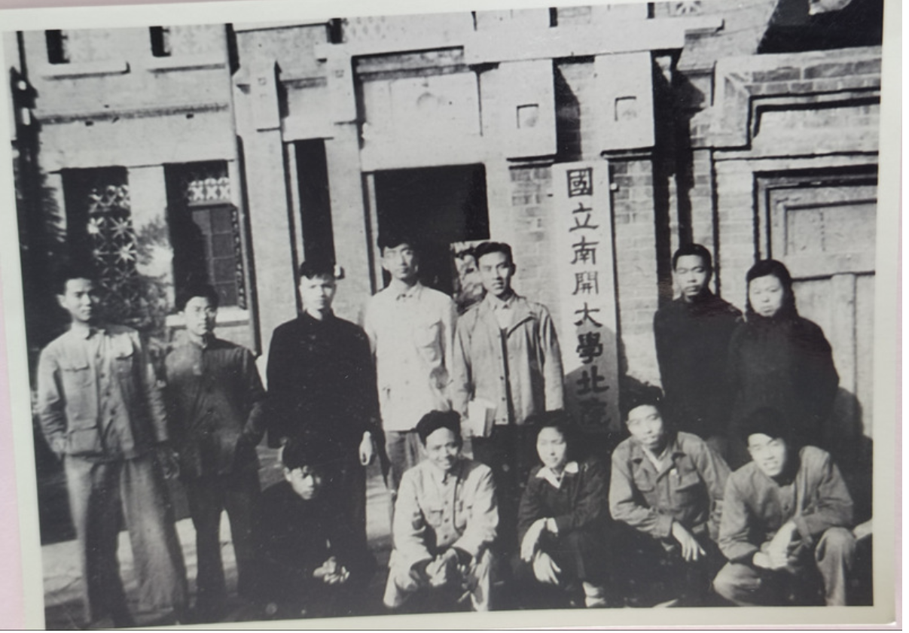
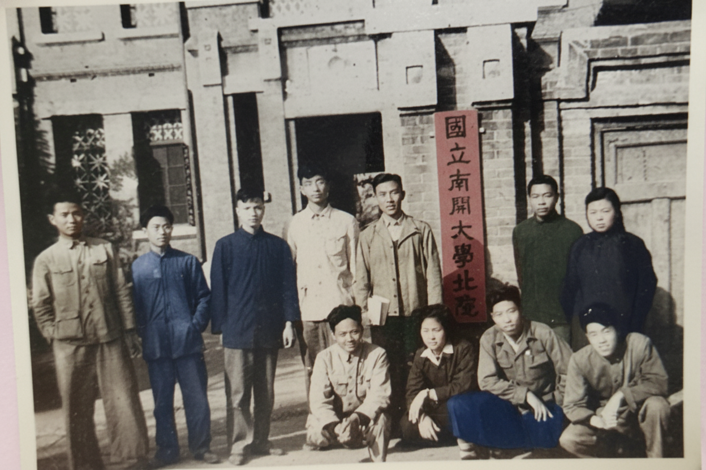
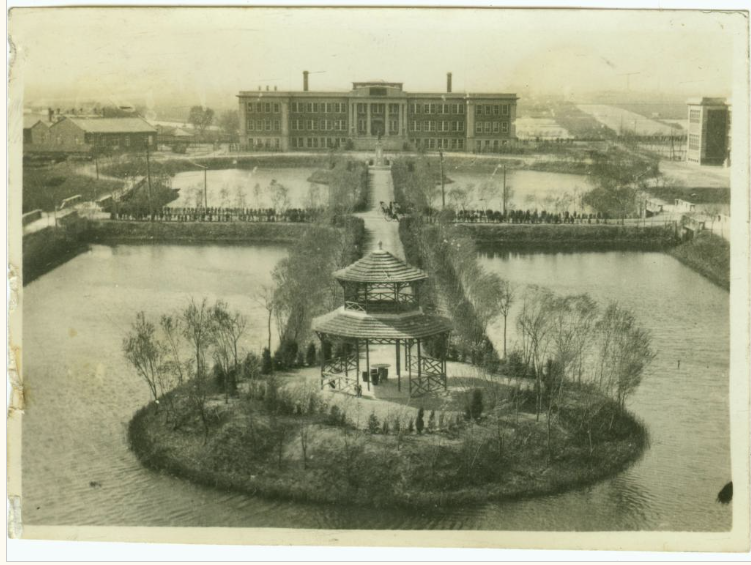
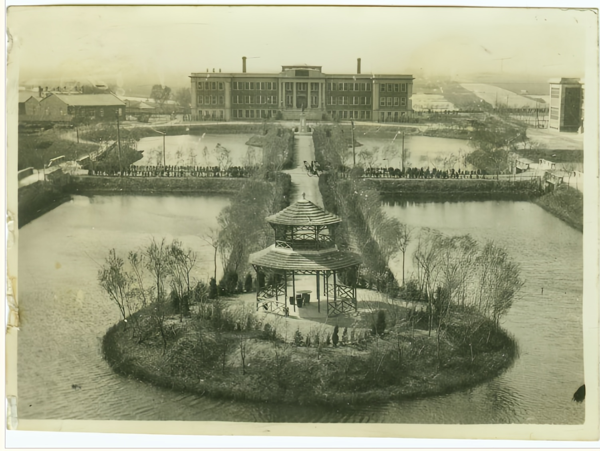
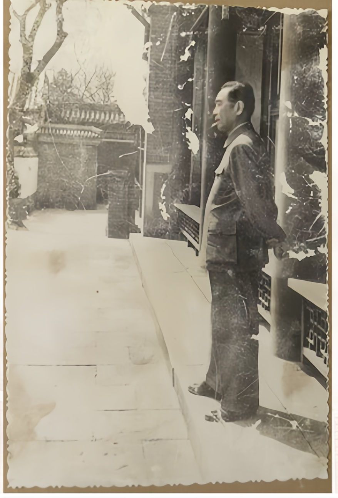
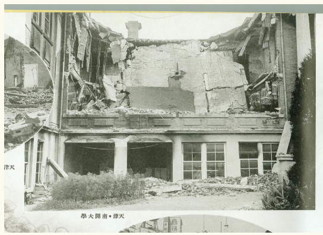
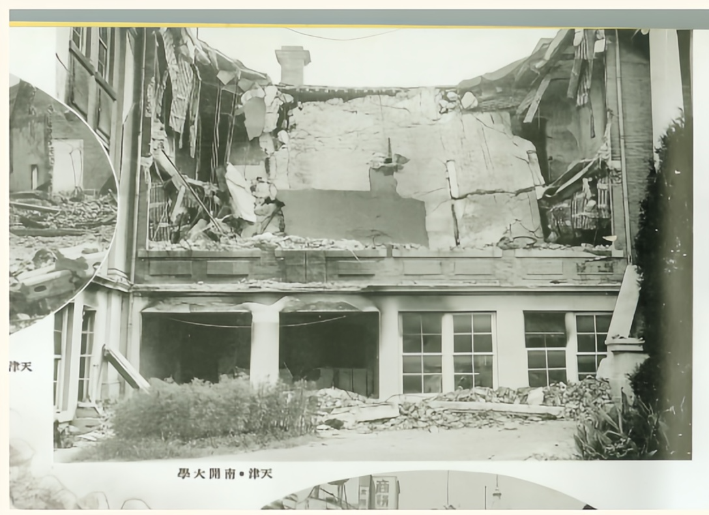
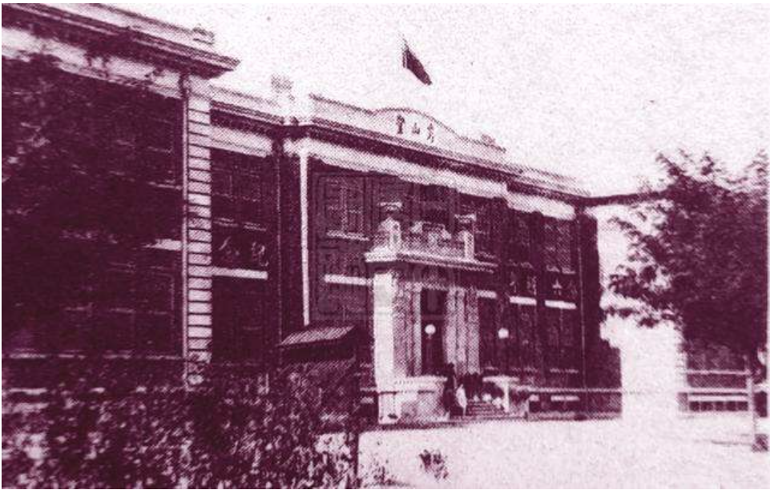
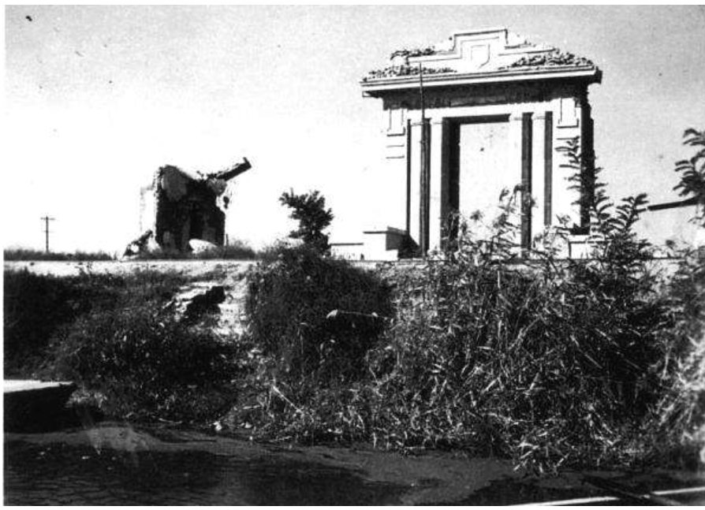

1919
南开大学开学纪念合影 · 周恩来总理在后排


1920s
思源堂 · 南开八里台校区最古老建筑


1928
木斋图书馆 · 1937年毁于日军轰炸

1937
被日军轰炸后的南开大学 · 全国首所罹难高校
1946
南开返津复校 · 涅槃重生


1950s
毛泽东主席视察南开大学


1980s
南开师生校园生活 · 新开湖畔


1990s
南开大学老校门 · 百年学府的守望